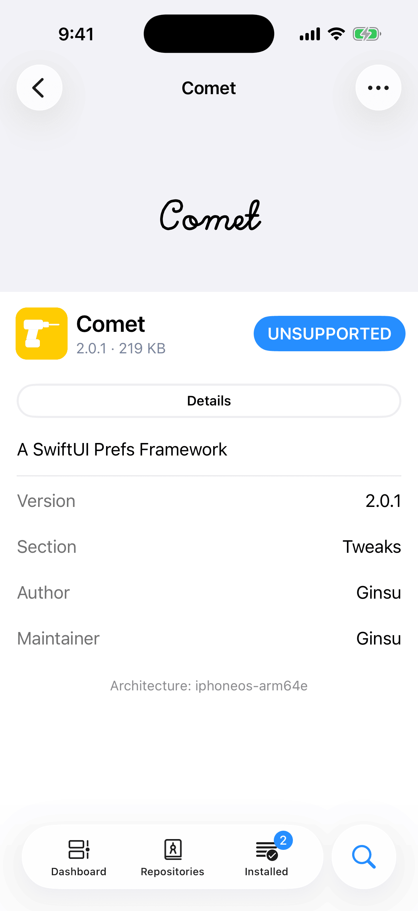
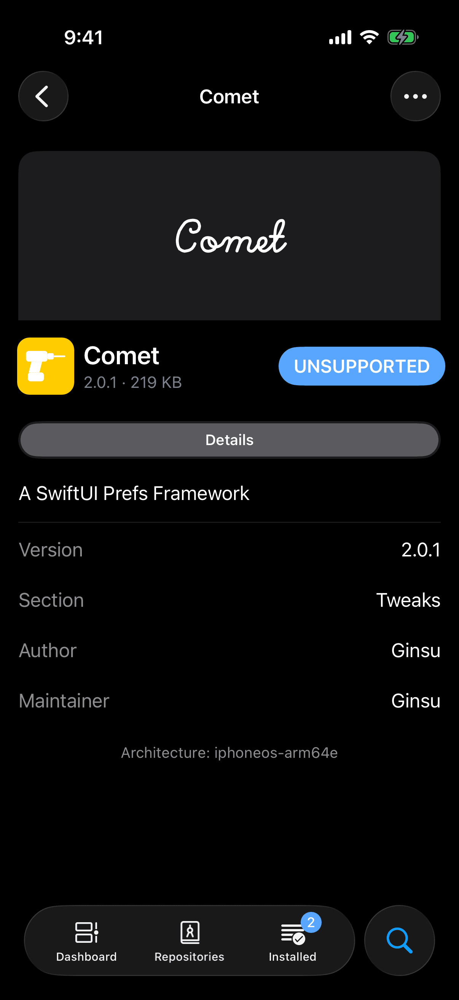

Compatibility mode is for one case: your bootstrap is roothide, and the package you want was built for rootless. Irisin can convert that package on your device so that it installs. If your bootstrap is rootless, Irisin converts nothing and you never see any of the screens described here.
After this chapter you know when Irisin converts a package, what each warning means, and what to do when a package is refused. Each alert is quoted here word for word.
What It Is
Every package is built for one bootstrap, and its architecture says which one: iphoneos-arm64 is rootless, and iphoneos-arm64e is roothide. On roothide, Irisin can convert a package built for rootless so that it installs on roothide. It does this on your device, after the package has downloaded and before anything is installed. That is compatibility mode.
It works in one direction only. On rootless, nothing is converted. Packages built for the old rootful layout (iphoneos-arm) are not converted on either bootstrap.
There is no switch for it. Irisin converts a package only when its architecture is neither your own nor all.
A conversion can fail, and a package that was converted can misbehave once it is installed. Irisin says so each time, in the alert described under The Warning.
Before You Install
You can tell that a package will be converted before you queue it. Open the package's page and read the footer under its description (see A Package's Page). The first line names what the package was built for, for example Architecture: iphoneos-arm64. When Irisin would convert the package, a second line reads Installs in compatibility mode. The line appears only when the package does not fit your architecture and Irisin can convert the one it was built for.
If another of your repositories offers the same package built for roothide, Irisin tells you when you ask to install the rootless one. The alert is titled Better Package Available, and its message reads like this: You selected version 1.4, built for iphoneos-arm64, which would be installed in compatibility mode. Example Repo offers version 1.4 built for this system. It has three buttons:
- Select Recommended opens the page of the package built for your system. Nothing is queued; you install it from that page. Prefer Select Recommended: a package built for this system installs without being converted.
- The second button goes on with the package you chose. It reads Install Anyway, or Update Anyway, Downgrade Anyway, or Reinstall Anyway when the package is already installed, or Replace Anyway when it is already in the queue.
- Cancel closes the alert and changes nothing.
A package built for an architecture that Irisin cannot convert on your device has no install button. The button on its page reads Unsupported, in capital letters. Tap it and an alert titled Unsupported Architecture names both architectures: This package is built for iphoneos-arm. This device uses iphoneos-arm64e. Choose a compatible package. On rootless, this is what a roothide package shows.


To see what your copy of Irisin converts, scroll to the bottom of Settings (see The Footer). Under the line that names your architecture and your bootstrap, a roothide system shows Also installs packages for iphoneos-arm64. On rootless the line is missing, because nothing is converted there.
The Warning
When you tap Confirm on a change that installs a converted package, Irisin asks once more before the change joins the queue. The alert is titled Compatibility Mode and reads: You are about to install software in compatibility mode (Example Tweak and Example Theme). These packages are converted automatically during installation to a format this system supports. This may cause problems and damage the system. The parentheses name the packages that would be converted, dependencies included. The buttons are Cancel and Install Anyway, which is drawn in red.
Irisin asks about each package once, as it joins the queue, so a later alert names only the packages that are new. Install Anyway adds the change to the queue and closes the sheet. Nothing is installed yet: you still run the queue yourself, and you can still take the package out of it.
The change sheet names the next step before you confirm. Under the list, its footer ends with Packages in compatibility mode are patched before they install. If patching changes the queue, review it again before you execute.
Patch Before Execute
While the queue holds a package that still has to be converted, the button on the Queue page reads Patch in place of Execute. Patch converts; it installs nothing.
- Open the queue, from the Queue tab or the floating bar.
- Tap Patch. A spinner takes the button's place, and the queue's menu is hidden until patching ends. Irisin downloads any file that is not on the device yet, then converts each package once.
- If an alert titled Queue Changed appears, read it, tap Dismiss, and look through the queue again.
- The button now reads Execute. Tap it to install, as described in Patch and Execute.
Patch can change the queue. Before it runs, Irisin has only the repository's description of the package, so it plans as if every converted package needs rootless-compat. After it runs, Irisin has read the files and knows which packages need it. A theme with no program code needs neither rootless-compat nor com.roothide.patchloader, so both leave the queue when nothing else asks for them.
When that happens you see Queue Changed. The alert has up to three lines:
- Removed from the queue: rootless-compat. This line names what left.
- Added to the queue: Example Library. This line names what joined.
- Review the queue before you execute. This line is always there.
Its one button is Dismiss. If you left the Queue page while patching ran, the alert waits until you are back on it. No alert means patching changed nothing.
If Patch Fails
The reason appears in red at the top of the queue, beside a warning triangle, and nothing is installed. What happens next depends on the reason:
- A package was refused. The row carries one of the messages listed under What Is Refused, and the button still reads Patch. Tapping it again refuses the same package, so remove that package from the queue first.
- Something else went wrong in the conversion. The row reads Unable to patch com.example.tweak. Try again. and the button still reads Patch. Tap it again.
- A file could not be downloaded. The row reads The download was interrupted. and the button reads Retry, which downloads the file again.
Packages that were converted before the failure stay converted, so the next tap starts from where the last one stopped.
What Is Converted
Compatibility mode converts:
- tweaks,
- apps,
- command-line programs,
- daemons, and
- themes.
Three things change. Files the package keeps under /var/jb/ move to where roothide keeps them. Programs and libraries are adjusted to find each other there and are signed again. The package's scripts and its architecture name are rewritten from iphoneos-arm64 to iphoneos-arm64e. Images, strings files, and other plain resources are left unchanged.
Converted
- Files under
/var/jbkeep their path without it - Tweaks, apps, programs, daemonsconverted and signed again
- A package with program codegains
rootless-compat - A themegains nothing
Refused
- A file outside
/var/jb - A
conffileslist - A set-user-id or set-group-id file
- Packages known not to worksuch as
ellekit - Anything the Procursus Team maintains
- Irisin itself
wiki.qaq.irisin
Any cross stops the package at Patch, before anything is installed.
A converted package leaves two traces you may find on disk. Beside each converted program or library sits a link with the same name plus .roothidepatch. The package as it was shipped is also kept on the device, in a folder named pkgmirror under var/mobile/Library, where rootless-compat looks it up. Both belong to the package; leave them alone.
A package with program code gains a dependency on rootless-compat, version 0.9 or later, which is installed before it. A package without program code, such as a theme, gains nothing. Irisin never adds a repository for you, so rootless-compat must be available from one you have added. If none of your repositories offers it, the queue cannot make a plan. You see the sheet titled Unable to Prepare Installation, and its reason reads Some package requirements could not be matched. The check that names rootless-compat ends in Not Found in Installed Packages or Repositories. Add a repository that offers it and try again; see When a Plan Cannot Be Made.
What Is Refused
A refused package is never installed half converted: the refusal comes before anything reaches the installer, so nothing on your device has changed. The reason appears in red at the top of the queue, in one of the three messages below. Each names the package by its identifier.
Refused by Name
ellekit is known not to work in compatibility mode. Some packages are known not to work once converted, and Irisin refuses them as soon as it opens the file, before it converts anything. A package is refused when:
- its identifier is exactly
ellekit,oldabi, orwiki.qaq.irisin; - its identifier contains any of
xinam1ne,xinamine,legizmo,vnodebypass,voicechangerx-rootless,appsyncunified,choicy,com.tigisoftware.filza,sileo,zebra,com.opa334.ccsupport,ws.hbang.common,libsandy,preferenceloader,newterm3, oraltlist; - its maintainer is the Procursus Team.
No setting overrides the list. Look for a roothide build of the package instead.
Refused by Content
Other packages are refused for what is inside them. There are two messages.
- com.example.tweak cannot be installed in compatibility mode, which does not convert DEBIAN/conffiles. The second name is what stopped the conversion, spelled as it appears in the package. The most common are a file outside
/var/jb/, aconffileslist, and a set-user-id or set-group-id file. - com.example.tweak cannot be installed in compatibility mode. var/jb/usr/bin/example could not be converted. The second name is a program or library inside the package that Irisin could not rewrite: it is damaged, it is not 64-bit, it has no room for the change, or it carries entitlements that cannot be preserved.
Neither is something you can fix on the device, and trying again fails the same way. Send the message to the package's maintainer, or look for a roothide build.
One more case never reaches Patch. A rootless package that declares a conflict with your bootstrap gets no plan at all. Irisin does not offer a plan that would remove the bootstrap to make room for it. See When a Plan Cannot Be Made.
Irisin Itself
wiki.qaq.irisin is on the list above, so Irisin never installs itself through compatibility mode. Irisin has a package for each bootstrap. Install the one for yours; see Choose Your Package. Do not convert Irisin with another patcher either: a copy built for the other bootstrap stops at Unsupported Architecture when it opens, as If It Says Unsupported Architecture explains.
A newer version of a package you installed in compatibility mode would have to be converted again, so Irisin does not offer it as an update until you allow it. See Compatibility Updates.